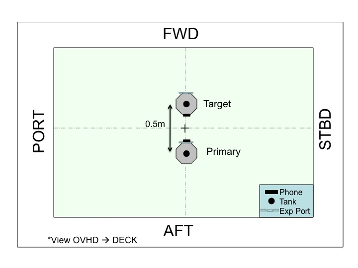

Objective: Test the global estimation system and the satellite thrusters.
Approximate Run Time:
The test terminates automatically.
Approximate Positioning:
Please follow the table and figure below:
| Satellite | ORIENTATION | POSITION |
PRIMARY | Tank: OVHD
Phone: FWD | 0.25m AFT of center of volume |
TARGET | Tank: OVHD
Exp. Port: FWD | 0.25m FWD of center of volume |

Test Synopsis:
This test has three parts which run in sequence automatically:
- Initial test of the global metrology system (free drift for ~10 seconds)
- Open loop thruster firings to check thrusters, listen for even spacing (~3 seconds)
- Closed loop reorientation to check thrusters and estimation together (~13 seconds)
Following the test please notify the POIC of the satellite return value.